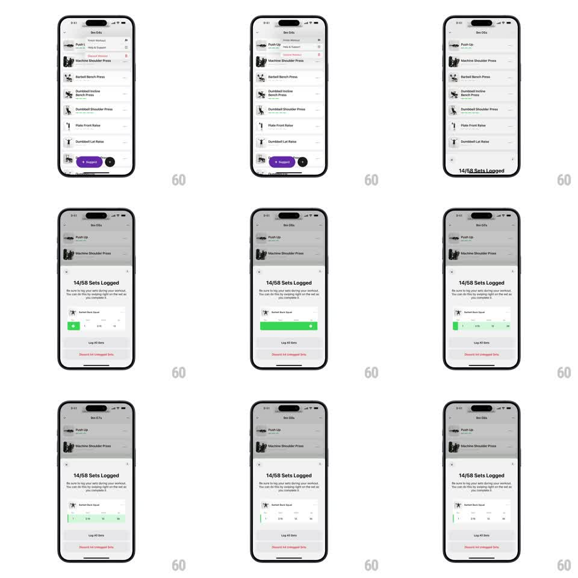

Media
Frame-by-frame

Rebuild this animation 1:1: Train's swipe-to-log tutorial - a bottom sheet over the workout list explains the gesture, and inside it a demo exercise row loops a green swipe fill showing how swiping right logs a set.

Rebuild this animation 1:1: Train's swipe-to-log tutorial - a bottom sheet over the workout list explains the gesture, and inside it a demo exercise row loops a green swipe fill showing how swiping right logs a set.
## Integration
Integration: stack-agnostic spec - springs given as stiffness/damping, timed motions as duration + curve; map every value to your framework and animation library of choice.
## Scene
Dimmed workout exercise list behind a white bottom sheet: grabber, close X, title "14/58 Sets Logged", instruction copy ("swiping right on the set as you complete it"), a demo card row (exercise thumbnail, name, set/weight/reps fields), a green log button area, "Log All Sets" button, and a red "Discard 54 Unlogged Sets" link.
## Motion spec
Pattern: looping instructional gesture demo inside a static sheet.
- Sheet entrance: slides up (spring ~320/30, ~300ms) over a dimming scrim (0 -> 0.5, 200ms).
- Demo loop (~2s cycle): a green fill sweeps into the demo row from the left edge, tracking a simulated rightward swipe (ease-out, ~600ms); the row's log button flashes solid green with a white check; hold ~500ms; reset with a 200ms fade.
- Loop repeats indefinitely while the sheet is open.
## Calibration
- The simulated swipe should read as a finger drag: smooth ease-out, constant direction, no bounce.
- Keep the loop's reset gentle (fade), never a hard cut.
## Reduced motion
Static green completed state with a small "swipe right" arrow hint, no loop.
## Don't miss
- Only the demo row animates - the rest of the sheet is still.
- Green fill enters from the left and travels right (the direction of the real gesture).